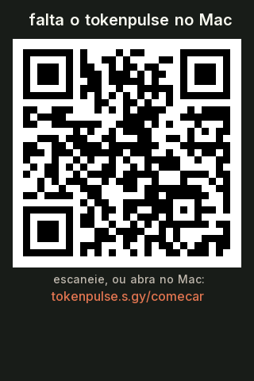
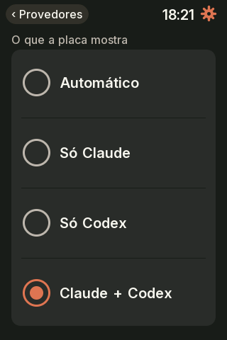
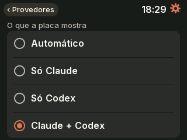
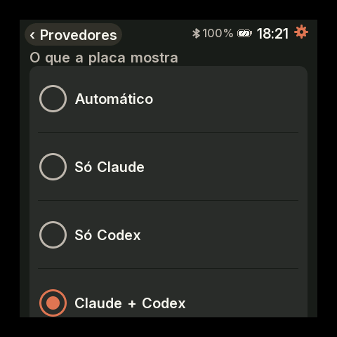

Qual é a sua placa?
Os próximos passos mudam um pouco conforme a placa. Cada uma tem o nome de uma árvore.
Toque na sua placa para ver os passos dela.
Plugue a placa no computador
Ligue o Caixeta e coloque no WiFi
Use um cabo USB que passe dados (cabo só de carga não serve). A placa liga e mostra "Falta o tokenpulse" com um QR code para esta página: é o sinal de que ela está pronta e espera o programa do passo 3.
Na primeira vez, a tela pede quatro toques com a caneta, um em cada canto, para calibrar o toque.
A primeira conexão é pelo cabo. Depois, ela também funciona sem fio, por Bluetooth: no macOS, o sistema pede permissão uma vez.
- Ligue em qualquer fonte USB. O USB dele só alimenta.
- A tela mostra um QR code. Escaneie com o celular para entrar no WiFi
tokenpulse-caixeta. - A página que abre (ou
http://192.168.4.1) lista as redes. Escolha a mesma rede do computador e digite a senha. - A página diz se conectou. Aí a tela mostra o QR desta página, esperando o passo 3.
Não use o WiFi do computador para entrar no tokenpulse-caixeta: sem cabo de rede, ele fica sem internet enquanto estiver lá.

Se algo der errado
A tela não mostra o tokenpulse (placa em branco)
A placa veio sem gravar. Grave pelo navegador, no site, com o Chrome ou o Edge e a placa plugada. Depois volte aqui.
Liga, mas a tela fica em "cabo USB"
Gire o plugue USB-C: na Sumaúma, só um lado do plugue passa dados.
O computador não vê a placa
Troque o cabo: muitos cabos só carregam. Evite hubs sem fonte. No Linux, veja também a nota de permissão da porta serial no passo 3.
A minha rede não aparece ou não conecta
O Caixeta só usa redes de 2,4 GHz. A página diz o que deu errado: senha, rede fora de alcance ou de 5 GHz.
Ainda está com o firmware da GeekMagic
A primeira gravação é pelo atualizador de fábrica dele, pelo WiFi. Veja como no site.
Rode este comando no computador
Abra o Terminal (no macOS ou no Linux, o comando é o mesmo), cole e aperte Enter:
curl -fsSL https://gilsondev.github.io/tokenpulse/install.sh | bashEle instala o programa que lê o seu uso e manda para a placa, e o deixa rodando sozinho, também depois de reiniciar. Não pede senha. Veja o script antes, se quiser.
No Linux, ele instala um serviço de usuário do systemd. Para a placa no USB, o seu usuário pode precisar entrar no grupo dialout: se for o caso, o instalador mostra o comando. Depois de rodar, saia e entre de novo na sessão.
! diz o que falta e o que fazer.Se algo der errado
Apareceu "nenhuma placa ainda"
Confira o cabo (passo 2). O programa continua procurando: plugue a placa e espere alguns segundos, sem rodar nada de novo.
O Caixeta e o computador precisam estar na mesma rede. Redes de convidados e VLANs separadas bloqueiam o mDNS, que é como o computador acha a placa.
Apareceu "Claude Code sem login"
Rode claude e entre na sua conta. Sem o login, a placa mostra os tokens do Claude, mas não o % de uso. Não precisa rodar o instalador de novo.
Onde fica o log
No macOS, em ~/Library/Logs/tokenpulse.log. As últimas linhas costumam dizer o que houve: tail -20 ~/Library/Logs/tokenpulse.log.
Para remover
curl -fsSL https://gilsondev.github.io/tokenpulse/install.sh | bash -s -- --uninstallA placa volta para "sem dados do Mac".
Responda as perguntas da placa
Na primeira vez, a placa faz no máximo três perguntas, uma por tela. Cada uma só aparece se fizer sentido no seu computador:
- Provedores. Se o computador usa o Codex, ela pergunta o que mostrar: automático, só o Claude, só o Codex ou os dois.
- Multica. Se o computador tem o Multica, ela pergunta se mostra a página dele. Por padrão, fica oculta.
- Login do Claude. Se o Claude Code ainda não tem login, ela lembra de rodar
claude. Dá para pular e ver só os tokens.
Responda tocando na tela. Tudo pode mudar depois em Ajustes, pela engrenagem.
A Açaí não tem toque: a tela diz onde responder, e o botão BOOT escolhe o automático.
O Caixeta não tem toque: a tela mostra a pergunta e você responde na página da placa, em tokenpulse-caixeta.local, no computador ou no celular na mesma rede.
Se o firmware da placa for mais antigo que o programa, ela se atualiza sozinha antes: a tela mostra "Atualizando o firmware". Não desligue a placa nesse meio-tempo.




Se algo der errado
A placa não fez nenhuma pergunta
É normal: sem Codex, sem Multica e com o Claude Code logado, não há o que perguntar.
Escolhi errado
Mude em Ajustes → Provedores ou Ajustes → Multica.
Mude na página da placa, em Provedores ou Multica.
Pronto
A placa mostra o seu uso ao vivo: a janela de 5 horas no anel, a semana, os tokens de hoje e o que cada sessão está fazendo.
Arraste para os lados para trocar de tela. A engrenagem abre os ajustes.
O botão BOOT troca de tela, e segurar volta para a principal. Ela gira sozinha.
As telas passam sozinhas. Brilho, tempo de cada tela e alertas ficam na página da placa.
Atualizações. Quando sai uma versão nova, a placa avisa com "Versão nova". Um toque em "Atualizar agora" atualiza o programa do computador e depois o firmware das placas, em cerca de 1 minuto. No Caixeta, o botão fica na página da placa.
Se algo der errado
A placa voltou para "sem dados do Mac"
A tela de espera diz qual etapa falta: caboWiFi, programa ou dados. Se o programa parou, rode o comando do passo 3 de novo.
Mostra os tokens, mas não o %
Falta o login do Claude Code: rode claude e entre na sua conta.
Quero atualizar na mão
Rode o mesmo comando do passo 3. Ele baixa a última versão.